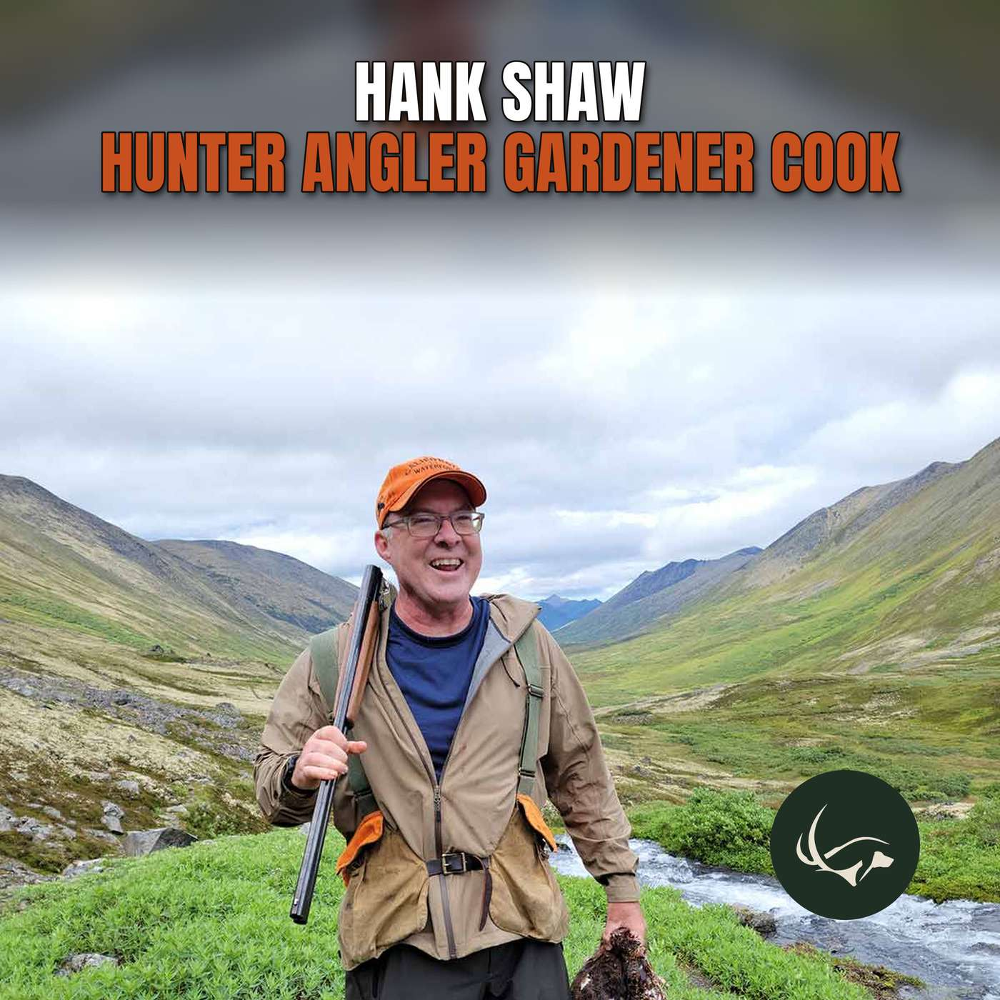

Episode 70 · November 17, 2026 · 54:59
Hank Shaw of Hunter Angler Gardener Cook: Eating Swan, Canvasbacks & Wild Game Cookery

About This Episode
Hank Shaw, the James Beard Award-winning chef and author behind Hunter Angler Gardener Cook, joins Tyce to talk wild game from the field to the table. Hank didn't grow up a hunter — he started at 30, after years as a restaurant cook and then a political reporter — and has spent the time since writing six cookbooks and building huntgathercook.com into a home for forgotten feasts. They get into Utah's swan hunt and why swan is royal meat, why Hank will not skin a canvasback, morels after a fire ("mushrooms in Mordor"), how a wigeon's diet can change its flavor in a matter of days, cooking duck breasts like a steak and the legs like brisket, eating coot, and the ultimate pheasant taco.
In this episode:
Guest: Hank Shaw, chef and author of Hunter Angler Gardener Cook Hunter Angler Gardener Cook: huntgathercook.com Instagram: instagram.com/huntgathercook Substack: To the Bone
The Gunshy Fix Introduce your dog to gunfire the right way, or help work through an existing gunshy issue with The Gunshy Fix. 👉 The Gunshy Fix
Kuranda Dog Beds Kuranda Dog Beds
ALL American Canine ALL American Canine (Promo Code: UTAHBIRDDOG)
Gunner Gunner
NuVet Supplements NuVet Supplements (Order Code: 56496)
Paradigm Sporting Dog Paradigm Sporting Dog First Aid Kits
HOSS Straps HOSS Straps (Promo Code: UTBD15)
Questions about the training topics in this episode? Tyce works with bird dog owners and hunters through Utah Bird Dog Training. Reach out to work with him directly.
Resources & Links
- huntgathercook.com
- @huntgathercook on Instagram
- tothebone.substack.com
- The Gunshy Fix — Sound conditioning program for gunshy dogs.
- Kuranda Dog Beds — Elevated, chew-proof dog beds built for working dogs.
- Gunner — Crash-tested kennels, bumpers, and gear for working dogs.
- NuVet — Cold-pressed supplements for optimal dog health.
- All American Canine — Made-in-the-USA treats and supplements for working dogs. Promo code: UTAHBIRDDOG.
- HOSS Straps — Weatherproof dog collars, e-collar straps, and gear straps. Promo code: UTBD15.
- Paradigm Sporting Dog — Veterinarian-designed first aid kits for bird dogs.
- Utah Bird Dog Training — Tyce's professional training services.
- Field Bred Golden Retrievers — Tyce and Rachel's golden retriever breeding program.
- Utah Pointing Labs — Tyce's pointing lab breeding program.
Transcript
Full transcript for Episode 70: Hank Shaw of Hunter Angler Gardener Cook: Eating Swan, Canvasbacks & Wild Game Cookery.
Tyce
Hey everyone, welcome to the Bird Dogs and Big Game Podcast. , thanks for tuning in today. , I had this, the show that I'm gonna share with you, ha- share with you in just a minute with Hank Shaw, I had a ton of fun. And if,, if you're hungry, don't check out his website when you're hungry 'cause you're gonna buy all of his cookbooks. So Hank Shaw is,, you know, I wanna say, I wanna say world-renowned for,, his wild game recipes. , they're awesome. He said I think he has two... over 2,000 wild game recipes, more than anyone online or has invented or come up with., as far as I know, he has the most. So,, super fun guy to have on. He's a passionate hunter,, outdoorsman, and,, in this podcast, we just, we just barely scrape the surface of,, all the things that he, he, he knows and understands about the outdoors. So I'm excited to share this one with you guys. In the meantime, I wanna,, also talk about those companies that,, help us. So I want you guys to check out All American K9. , they, - They make these dehydrated,, whole food treats for your dog. So they have minnows, they have duck necks, duck feet, like full bodies, duck jerky. They have probiotic gut support, hip and joint support. They have a ton of stuff, but if you're looking for these, these dehydrated treats, they're really interesting. They don't s-- You think they would like smell or you think they potentially,, you know, just a dehydrated part of a duck. But these whole foods, there's no like seed oils and there's none of that just garbage that goes into a lot of treats. So if you're looking for a treat, just like, "Hey, I wanna give my dog a little bit of energy, a little bit of boost when I just go into the field, but I don't wanna put a ton into their stomach, you know, give them a bunch of food." , if you wanna support a really good company, All American Canine, just like their name, All American, it's a hundred percent sourced on American farms, and these treats are carefully dehydrated. I've yet to find one, honestly. My dogs just, they love them all and they just gobble them down. So if you wanna do something a little different than the little,, you know, biscuit toy treat, something that's healthy, natural,, you know, whole food type thing, a dehydrated food, check out All American Canine. , also check out NuVet Labs if you're looking for,, also another good product that we really like and recommend,, to all our puppies that are going home. We, we really like NuVet Plus,, and that's a wafer. It's a,, cold press. You know, a lot of your food, you're cooking stuff out. And so,, these NuVet wafers are cold press, and you just throw one in with your dog's food. And, you know, I go back and forth on supplements. Oh, do they, they make a difference or not? But I think supplements are kinda like our own personal bodies, right? Like if I take sup-supplements, do I live longer? Do I live better? Well, yes, our body, our bodies are a motor of a sort. And so if we're putting good stuff or optimal stuff into our bodies or into our dogs- they're hopefully gonna last longer, right? And be, and be that much more an athlete and avoid sickness and things like that. So,, check out both those companies in our show notes. We're gonna have links to those., if you support those companies, it helps us out. So we really appreciate that., these podcasts,, they are fun to do, but they do take a lot of, a little bit of time. But,, most importantly, it's you guys that I really appreciate taking the time to listen as I get to interview some of these really cool guests and, and,, share some information with you guys that is hopefully beneficial,, to your lives. So,, thanks again for checking us out. Give us a follow., if you're wanting to follow us on, you know, our social medias, check out,, Bird Dogs and Big Game,, podcast on- online. And then,, also check out our social media,, Utah Bird Dog Training, that's my training business, and then Field Bred Golden Retrievers, that's our golden retriever breeding business. And,, we try pr-, breed really nice dogs. We just barely had a female today that we X-rayed her, and she has 10 pups in there. And so those are gonna hopefully come in the next week or so. Hopefully, they all come out healthy and strong. And so we'll be planning,, mom and dad with those, those pups and excited to get them into homes and see them in the future and what they can become. And we love seeing those dogs go out and, and some of them come back for training. And then we love seeing them, the hunting pics or the family adventures that they go on. So without further ado, let's get to the podcast, and I introduce to you Hank Shaw. All right folks welcome to the Bird Dogs and Big Game podcast. I'm excited for this show today. It's a little bit different than I would say some of our some of our shows and I like that. That's I like different stuff and we're gonna talk about food and I have on the show with us today Hank Shaw. Hank thanks for coming on and spending some time talking with me.
Hank Shaw
Yeah, thanks for having me on.
Tyce
So this is gonna be fun. A little bit my you know growing up my I came from a family of seven kids and I'm fifth of seven and so really my parents they they we kind of ate to ate to ate to survive you know they just cooked my mom didn't wasn't really a mom if you hear this I love you but she's not the best cook she's fine she's you know.
Hank Shaw
I'm sure the funeral potatoes were good.
Tyce
didn't know anything different yeah green jello funeral potatoes I heard that in Utah but I didn't know anything different you know I was like hey we just eat and we kind of ate to survive ate to have fun my parents are big adventures outdoors people that's how they you know got me all into this this type of stuff so but my wife her she's a dietitian from from school so she's she's a foodie she's big into how food helps our bodies and the whole health aspect and so I'm a little more dangerous when it comes to food for sure than I used to be and my knowledge of it and in the in cooking and just enjoying good food in general so I really appreciate good food a good restaurant you know when they're when it's cooked right and it's just it's it's a treat you know so I was telling Hank before we got started here I was watching I was I was looking at his website here huntgathercook.com right yep and man the food on and I haven't had you know I didn't really lunch and dinners here it's three o'clock and I'm your foods and just making me salivate so you have good pictures on here and yeah it looks awesome so but let's let's talk about you man tell us tell us about Hank Shaw let's I always love enjoy enjoy hearing like about your your background and how you got into all this stuff and hunting and gathering and tell us who you are and kind of where you came from sure I mean
Hank Shaw
I mean, I think the very short version of it is I did not grow up as a hunter I picked up hunting when I was 30. So it is quite a while ago now because I'm I'm not even close to 30 anymore. So But And it's funny. I started as with a small game at upland
Tyce
So okay, we can talk about that later
Hank Shaw
But yeah, my career arc is I started I was the youngest of four Four, yeah, there's a gap between me and the next one. So my mom and my stepdad really enjoyed to go and go in a nice restaurant so I'm the opposite of you guys so so, so for me I grew up in really nice restaurants in New York City because I'm originally from New Jersey and so my introduction to game and always from that so my long before I ever picked up a shotgun or a rifle for me game was something very special for it was a French restaurant it was German restaurant was Italian restaurant was something like really fancy so when I started to actually hunt when I moved to Minnesota the first time in the about 30 years ago or almost 30 years ago that's kind of the stuff that I started to cook and you know because very early in my working life I worked in professional kitchens so I was a line cook and a sous chef so I've never I was a chef but I was never an executive chef so I want to make that distinction I never ran or owned a restaurant so but I worked in plenty of professional kitchens so I had scars in the burn marks to prove it and I I moved from that job to being a newspaper reporter and I was a newspaper reporter covering politics for almost 18 years and I I don't know if you noticed or not but politics has gotten a little polarized lately so from a newspaper reporter standpoint that becomes very boring when there's not a lot of debate or compromise because that was what got me into it so I started to write food and and in around 2006 ish and what was really interesting was was I found my niche very quickly because like I'd been a gatherer and an angler my whole life that's part of our family's DNA is that sort of thing so I started to write about that and then once I once I moved to st. Paul I was working in a newspaper there and my best friend was the outdoor writer named Chris Niskinen and he's a huge up one hunter by the way and so he took me on my first ever hunt which was a pheasant hunt in Aberdeen South Dakota so I actually dedicated my small game book which is pheasant quail cottontail that's all upland that's where all my upland recipes live I dedicated that book okay because he created he created a monster okay I like it yeah I've been doing this full time I started I started hunter angler gardener cook which is the website you mentioned in 2007 so it's damn near 20 years old. So I am legitimately an OG food blogger and you are mad. I won the I won the James Beard Award in 2013 which they're not familiar it's basically the Oscars of the food world so it's there will be readers and listeners who know what the James Beard Awards are and I was looking forward to actually I have probably the next something I'm gonna do will probably be waterfowl but I'm okay I, some late-season upland stuff as well
Tyce
okay so do you you do you hunt quite a bit of waterfowl or that is that kind
Hank Shaw
of new to you I literally wrote the book on how to cook ducks and geese it's called goose that book came out in 2013 and oh my ex and I my exes we used to live in Sacramento California and we god we shot hundreds and hundreds and hundreds and hundreds of ducks like okay it was religion for us so we I guess I
Tyce
didn't talk enough offline about but yes thank you yeah in fact I've hunted the
Hank Shaw
Great Salt Lake and and in that whole area I shot my first swan and oh cool
Tyce
yeah did you come out here and hunt who'd you hunt with did you hunt with an outfitter or did you come out know someone or no we knew some guys some
Hank Shaw
some of the guys from Camp Chef took me out and okay for fun and they had a friend who's got an airboat and it was just it's I love the duck hunting in the Salt Lake area it's really fun yeah and I've also shot some of the world's dumbest grouse in the Uintas okay yeah yeah the blue grouse are we hunting
Tyce
yeah yeah yeah those grouse it's interesting you put a dog on them though and it makes them a little more a little more wild you know that's true you spent quite a bit of time out K out here in Utah then if you've been out on the Great Salt Lake and the Uintas and
Hank Shaw
I just I've never drawn a big game tag there but I kept I tried for a while I mean I can't remember if they keep if they do points in Utah but if they do I have they do points yeah but mostly I've hunted docks geese I got my swan and then a bunch of upland stuff as well now tell me did you eat your swan or did you taxiderm you know in fact in fact did you eat it and taxiderm yet oh no it's even it's so good okay we were big group there were like six of us had tags and so we said like one of the guys had all these decoys out it and so everybody knew I wanted a juvie because I like you only get the one right so god's green acre that I wasn't gonna eat it you're shopping yeah well I mean it's such a legendary meat like the Queen of England got it for Christmas dinner for her like her whole reign like the like swan is like a big deal like a royal meat in Europe and and so I wanted I wanted a piece of that and yeah and so everything I shot was like a cygnet which is you know the young ones well good thing about swans is the young ones have got that dark on them so you can see yeah yeah and so we waited and waited and waited and finally like midway through the hunt one One flew by and then I got my swan.
Tyce
Nice, nice, that's cool. Yeah, you don't, I mean, most people get them and put them on the wall, but you don't think how it's kind of, you know, it is so special to get one bird and that, so that, you know, supply and demand, it kind of increases the, it makes it more special, right? When it's that rare of a meat type thing, so.
Hank Shaw
It's the same thing. I've never once, I don't have a, I have two taxidermy ducks in my house, but I don't have a canvasback because there's no way I'm not going to eat a canvasback. It's like, it's like the greatest eating duck in the world.
Tyce
canvasback is?
Hank Shaw
Oh God, yeah, by far.
Tyce
Really?
Hank Shaw
Yeah, they're so good. If you skin a canvasback, somewhere an angel dies.
Like, I will come to your house and beat you up if you skin a canvasback.
Tyce
Wow. Okay. through every specie in Utah and talk about how to cook them and how to you know I can do that you do it did in your recipe book did you put a swan recipe by
Hank Shaw
chance I talked to him I actually I have a look at your so man I feel like I've been in the weeds like this is like a
Tyce
whole new world I'm opening up I'm seeing all your recipes actually honestly thought about having my wife on here because she's she cooked she cooked it she she likes food but she cooked a deer for me when we first got married she cooked a deer and she's like that that was disgusting and I don't know and she just didn't know how to cook it I'm sure cuz I actually love mule deer and and I just smoke I just barely shot one and smoked the whole back strap and on my trigger and it was it was awesome and and so I'm like you gotta try it again but she kind of I need to figure out how to keep you know convince her to try it again because I think some of your address will send you
Hank Shaw
a copy of the book and that will change your life okay I'm only half joking
Tyce
really like no I'm I really want one I'm happy to pay for one too I'm after I just feel like I've been missing out on all these amazing recipes and a man I looked at social media and I saw you have like a hundred thousand followers on there I'm like man where's where have I been I guess with you you know so that's really cool and then you do you know Robbie who's helped line up this podcast for us he was talking about you ever gathered mushrooms and I'm just like I have it man like I don't know I think so many people are just nervous to gather
Hank Shaw
them you know and eat the well but Utah has been especially good for morels morels after a forest fire. So like, I've come, I've come, I've flown specifically to Utah to pick morels in the springtime after your forest fires.
Tyce
Really? Okay. And we have a lot of, I mean, just by my house upon the Nebo unit here, we had a big old fire up there. And when was it? It was, oh, it's been a little while ago. It's probably been, I was before we moved here. It's probably, maybe, I don't know, I don't know about the morel thing, but it's been probably eight. probably eight years now.
Hank Shaw
Too late. Too late. What you want is the year after or two years after or a very occasionally three years after. There are exceptions to that, but generally speaking, if there was a big fire this year, that's where you want to go next year.
Tyce
What's the elevation?
Hank Shaw
It looks like gathering mushrooms in Mordor from Lord of the Rings, it's crazy. It's just everything's burnt and blown up, but that's where the mushrooms come out.
Tyce
Wow, okay.
Hank Shaw
That's good. And you know, there'll be an elevation in Utah, like so I can't tell you exactly, like when I lived in California, you would rarely find them below 5,000 feet, but you know, Utah's up higher, so.
Tyce
Yeah. I was probably living at about 5,000 feet. And that burn went from about, it actually evacuated our community, but it went from there all the way up to, oh, I mean, you're probably 9,000 feet, roughly, kind of that.
Hank Shaw
You'd find them all the way through there.
Tyce
Really? How do they get there?
Hank Shaw
They're with the trees, they're, they're. They are, mycorrhizal is the word for it, they live with the trees, so the actual mushroom you can never see, it looks like white, you know, cobwebs or whatever, and it's underneath the soil, so you'll never see it unless you're digging through it. But after the tree is damaged or dies, the mycelium, the mushroom underneath it is like, oh man, like, my buddy is dead, I gotta do something, I gotta move. So what it does is it sends up these mushrooms, which are the fruiting body is what we, What you and I would call a mushroom is technically the fruiting body of the mushroom. And so they pop up all of these morels and the spores are released to the wind. So that's how that mycelium moves, is it will send up mushrooms and then the breeze will spread the spores, hopefully to new trees. And then they'll root and then they'll be invisible until and unless that tree gets damaged or burned.
Tyce
So how do they know that is it just
Hank Shaw
just the how do they know that it's okay it's pretty wild like the the actual mycelia interacts with the tree you know if they call it the wood wide web wide web and they exchange nutrients and in many cases mushrooms can make plants healthier in the sense that that what they do what the mushroom does actually makes more nutrients available to the plants that they're with so that both are both are it's a symbiotic relationship they're both healthier and then so if the mushrooms you know kind of cruise along doing its thing and then all of a sudden its partner isn't there or the partners severely wounded by you know partial fires or whatever maybe like I gotta go I gotta move so and then
Tyce
it's in some mushrooms huh so and then you need that scorched earth for those the morels to come up or why do they disappear vegetation just takes over
Hank Shaw
yeah takes over and chokes them out mm- it's a burn morels will last a couple years after a fire and it's it's generally speaking if you if you have I had to tell you when to go it would be when your days are in around 70 degrees and your nights around 40 degrees so up high that can be June or
Tyce
July it seems like a lot of guys in their bear hunting will will pick them up like spring bear and stuff spring yeah for sure yeah yeah and those burns and stuff they'll pick them up yeah pick them up there so that's you know what May ish April April May timeframe yeah although I mean I've found them all the
Hank Shaw
way into July in the high elevations huh I don't know if I think I've seen
Tyce
morels but I've I don't know I've never paid attention for them it's like a honeycomb on a stick okay yeah I mean once you see what they look like but yeah it's hard to mistake huh I honestly didn't even know they shows how much I know about mushrooms that they even were in Utah like the mountains I heard
Hank Shaw
about rooms really that's crazy man the some of the places down south some of the the big plateaus there's a few of them they can get porcini mushrooms in the summertime when you get those monsoon rains and I mean down by the you know down by all the like arches and all of the big monuments there are places where in the summertime you can you know fill the back of a pickup truck
Tyce
full of porcini mushrooms I don't know if I know when the porcini mushroom is but what it so do your books you have a book that tells you how to gather
Hank Shaw
mushrooms and what I don't actually I should I should put that put that one
Tyce
on the list okay all right you guys heard me talk about All American Canine check them out allamericancanine.com they they're single ingredient treats they don't have any seed oils no additives no preservatives just whole family whole food animal ingredients grown on American farms so if you guys want to support American farms and just have all natural dehydrated whole food animal ingredients my dogs love them yeah I think that fascinates me because I love man grilled mushrooms and you know when you add them into the foods it's there or you know makes a hell of a sauce for a backstrap yeah I mean the sauce is on top I mean my wife I mean she knows more about there's we make steaks and do the mushrooms all over the top and the sauce and she'll do like some type of some type of reduction of I can't recall it was or whatever but she'll mix it in and it's it's amazing but huh that's cool what other what other mushrooms in Utah do you know that are what would you say the top five most common do you know by chance you might find out here well I
Hank Shaw
know porcini morels for sure you get oyster mushrooms in the cooler weather and they grow on dead logs you'll get chicken to the woods which are like a shelfy mushroom and they're bright orange I think are those on log trees yeah on trees okay those would be definitely some common ones you get meadow mushrooms and those are they look exactly like the mushrooms you get in the supermarket except for they had pink gills they're a little bit harder to identify because they have lots of look-alikes that you know whether they stain yellow or not or blah blah blah so like it's funny that the the mushroom that basically looks like the one you buy in the supermarket is a little tricky to just to sauce out in the wild yeah yeah you know well we had we had a
Tyce
rainstorm just not too long ago at this monsoon whether we've had in the front I have seven and a half acres here at my house and all these mushrooms started popping up like crazy around now I bet there's a shaggy could
Hank Shaw
be shaggy parasols or shaggy mains I mean if but one of the seals are like there's an entire network of people who send me they text me photos like what is this and I spend your whole day dealing with those stuff oh my god I have sometimes so my favorite you're gonna love this one so it happens about once a year somebody who I sort of know like no none of my real friends would do this because they're not that dumb but somebody you know I met him at a event or whatever and somehow they got my text my cell phone man and well once a year I'll get this note I just ate this mushroom can you tell me what it is and then listen to picture so every single time every single time I do that like you wait you just ate it so my response is if you have anything important to say to your wife because it's always a guy who doesn't you should say it right now and then I don't answer my text for an hour
Tyce
Oh man. I love it. Leave him on the edge, man.
Hank Shaw
mushroom without identifying you deserve to be freaked out so yeah okay I know I'm
Tyce
like the guy must be running on some low brain cells that's one way to get rid of part of part of our population firing all the way yeah I was well it's because I saw these mushrooms I'm like man like these are edible like I'm just kicking them over you know and I was looking at the bottom of them I don't know is it the gills what do they call that gills I was looking at it one was like brown I think I was like using AI to take pictures and trying to find out what it was and then it's like scratch the top and if it turns like yellow and I can't remember now at this point if it's like poisonous or not you know and I think most of them were but there were a few that like were a different color underneath they were like brown instead of white and it was like and supposedly that one was edible and then just behind my house so when I have my litters of puppies I'll throw my wood shavings behind my barn here and man there's these I just went out there today and there's these big old mushrooms out there and there it's kind of a damp you know those shavings I'm sure kind of break down that Mike what are these things it could be a shaggy parasol so
Hank Shaw
poisonous or if it's actually a shaggy parasol that's a delicious mushroom but
Tyce
you know I mean I might be that guy and text you a picture yeah I like life enough I don't want to die by eating a mushroom by just or you know shit your pants for five days which is much more likely to hallucinate yeah wonder my wife wonders where I went mentally so anyhow well okay so you don't have a book but it looks like you'd have a lot of recipes oh yeah I think mushrooms in there right
Hank Shaw
so and you know online I've got lots of recipes for stuff okay so if people are
Tyce
wanting to just figure out mushrooms though would you suggest just use AI these days god no god no oh no okay people get killed okay no you really
Hank Shaw
need it you really need a person so the okay I would recommend you know finding your well I think the first step would be to get on it's one of the very few things that Facebook is still good for is to get on the local mushroom hunting group in wherever you live and because there is one basically everywhere and I know there's one in Utah and just lurk don't say anything just learn like you know because people constantly will I'm finding this I'm finding this I'm and then buy a mushroom buck for the like the Rocky Mountain states so and then so you can the the best way to sort of quietly learn before you actually do anything is to look at what people are finding look at your book and then look up that mushroom and so you're basically like oh they're finding you know they're finding porcini so with a porcini or oh they're finding you know something like that okay that's a really good way to start but my advice is always once you have a little bit of confidence to go with somebody who's who knows how to make more and they the mycological societies do forays so they basically like they'll advertise hey it's 20 bucks or whatever it is it's usually really cheap we're going to this park we're gonna go all look for mushrooms and everyone gathers all the mushrooms you can find brings them back and then the experts will identify them at the like on a picnic table or whatever and and so then that that experience really really really embeds it
Tyce
in your memory might have to do that with my wife I think she'd get a kick out of that too and just getting outdoors and and yeah I'm gonna look that up that sounds fun it's super fun yeah cool well let's get we we talked about mushrooms here so thanks for that's I'm really curious what this mushroom is up I may send you a picture I don't know if I've ever seen one like this but sure you know but let's talk about on this podcast on this show I'd like to talk probably more birds so let's let's break down so a lot of people and you probably may maybe if you probably don't rub shoulder these guys but a lot of people they're like ducks are disgusting I you know I have my upland guys my clients you know or I train these dogs like I don't duck hunt cuz I don't like to eat them duck can be amazing right it's just knowing how to cook it and with species and the different species let's talk about let's start off with I don't know there we get a we get most I would say most of the
Hank Shaw
species here in in Utah you do I want shot a seven bird limit of seven
Tyce
different ducks okay yeah yeah yeah yeah we get we get a ton of different stuff do you want to go into some of the species and kind of how to kind of I mean there's a thousand ways to cook them but some maybe how to cook them not cook them how to prep them I think the number one thing that you have to
Hank Shaw
remember with it with ducks and geese because they're basically interchangeable in the kitchen the thing you have to remember sort of at the core is that yes they're birds but you cook them like beef and what I mean by that is that you cook the breast meat like a steak and you cook the legs like brisket so the the legs need to be cooked slow and low and then either shredded or just cooked until they want to fall off the bone unlike pheasants and wild turkeys they don't have really nasty sinews in the in the drumsticks so the drumsticks are delicious you have you have no problem I don't know if I've ever had duck legs they're super good especially goose legs goose legs are better okay and so they don't do a ton of walking they're usually just swimming around in a pond or you know waddling here and there so they're drumsticks are nowhere near as tough as like a pheasant or a wild turkey but they still need some long cooking and so if you think about a roast duck like a whole duck mm- it's tricky you can get away with it like teal you have a ton of green wing teal in the salt lake they're perfect actually for it but the bigger the duck gets it's a little trickier because the ideal temperature for duck breast meat is somewhere around 135 to 140 and you could get a little higher than that and still be okay but the breast you said yeah Yeah, you don't want to get past the meeting well. OK. okay okay and you don't want to get much past that because then it gets kind of brown and livery yeah this is why people say duck suck you know that's what I yeah people do exactly and and so but the legs won't even be done yet so that's a problem so it works with teal works wood ducks it works with you know wigeon and some of those smaller birds but once you get to a bigger bird
Tyce
it's a little trickier you take the legs off the birds and cook them different
Hank Shaw
then oftentimes like if I'm actually in duck hunting mode where I'm shooting a bunch of birds I will I'll break down almost all of my birds and so I like a packet of breasts and a packet of legs and then you know if I'm really shooting them the packet of wings cuz like mallard wings are really good yeah you can do like a buffalo chicken wing with with mallard wings and they're
Tyce
super good I think I saw a recipe on your website for some curry duck wings
Hank Shaw
or something like that or legs or yeah I think the the other thing that so the generally speaking if you're if you're shooting so-called good ducks you know pintail, pitail teal, wood duck, mallard, camisback, redhead, like birds that are
Tyce
not going to treat you wrong you know okay so gadwall, wigeon are those fall on
Hank Shaw
that it depends so I've had I've had disgusting gadwall and wigeon and I've had amazing gadwall and wigeon so it really depends on your your environment so for example on the Oregon coast wigeon are spectacularly disgusting because all they do is eat seaweed and so they stink like low tide in a hot day and they're the same bird that same bird could then fly to the Sacramento rice fields two days later and you know give it a few days to eat rice and that same bird changes from vile to phenomenal so it's all about sort
Tyce
of it doesn't take that long to change their meat flavor no they they have
Hank Shaw
really high metabolisms are running through pretty quickly bloods going through the meat and it just I mean it's the fat the fat changes because almost all of the character of any any animal protein is in the fat and so this is why if you shoot sea ducks or if you shoot some divers like blue bills tend to be tend to be fishy golden-eye are very fishy and I'm in I don't even know why you would shoot them or cancer like just don't just please don't shoot long darts off the yeah so what about they're always gonna be
Tyce
gross so and a funny side note have you ever eaten coot mm- all the time okay what do you think I was talking about I was duck hunting last night and a buddy's like if you're eating coot I'm like heck no dude I don't think eat those things with green talons I had one one time it wasn't that good like I don't know Mike I don't know what they taste like so any any input or yeah people he's like I know some people have said they're good and I'm like well
Hank Shaw
they're gallonals so they're not they're not ducks so they're an entirely different order of birds so they're more closely related to chickens than they are to to ducks now the problem is they are they get really nice and fat and the fats really pretty looking but it smells like the out pond algae it's like so the when you eat a coot it has to be skinned so you get all the skin and all the fat off it and so I usually just take the breasts and make sure all the fats off and then the giblets so they really huge gizzards and I love I love this you know to salt cure clean gizzards and cook them in a crock pot for 24 hours and they're phenomenal they look like they look like corned beef nuggets and they taste like corned beef nuggets and you know it's wish I could
Tyce
just live at your house and eat but I guess that's why you made a cookbook
Hank Shaw
exactly but yeah so I mean all things considered I don't really target them very often but if it's a very slow day and there's a bunch of them and you can shoot like six of them with one shell yeah I'm gonna make I'm gonna make some gumbo or some dirty rice or something like that so okay but take the skin off them though very much so yes yes okay let's break down a mallard one of
Tyce
the most convert keep the skin on take the skin off depends how you're cooking
Hank Shaw
it where you live keep the skin on so they can be a little dodgy in like salmon area why I've watched say mallards eat dead salmon so that's not gonna be a good salmon or a good mallard but for the most part mallards are tasty birds so I actually will I will roast a mallard hole sometimes and there's two ways to go about roasting a whole duck you can do it hot and fast or you can do it slow and low and the slow and low method is the old-school method it has to have the skin on you've got your birds you know it's not that hard to pluck a duck it's you know it's what's the skin just keeps them from
Tyce
drying out or why but it's also the flavor it's okay keeps it from drying out
Hank Shaw
but all of that subcutaneous fat underneath the skin that's why like that's why I duck hunt I duck hunt for the skin and fat period okay like if it was just for a search for red meat I'd shoot deer like I just shoot deer you know like who cares like it's like you mean maybe sometimes I will go on a snow goose hunt and just you know we'll blast a whole bunch of them because I want to make a batch of sausage and that's funny but it's that skin like this bit the way I describe a duck breast it's a steak wearing a hat made of bacon so you you sear that skin so crispy crispy crispy and that fat underneath it renders out and keeps that meat super I usually like a medium rare to medium some people like them dead rare but I would never take them past medium and it's so good it's just it's I crave it sometimes and mallards are
Tyce
perfect for that do you make like a sauce or not you'd like a marble aid sometimes you you can do that sure you probably have some recipes of that but
Hank Shaw
there are a billion sauces you could use like you can use all the classical French sauces you could I mean hell you could use Italian dressing in the pan drippings and call it good like because you're gonna get all that you're gonna get the brown bits and then the duck fat that's gonna render out in the pan and then I'll you know even if you even if you just add like Worcestershire or Italian dressing that's an acidic it's an acidic complement to a fatty sauce it's it's gonna be nice that means we'll get it open to be fine you
Tyce
know interesting okay so if you're if you're in Utah and you're like you're just shopping for meat you're like I'm I'm gonna I'm gonna hire to kill stuff to eat what would be the top species you had a target you mentioned canvasback
Hank Shaw
just talking ducks right now okay yeah ducks if I'm well I'm always mean so if I'm looking if I'm going to Salt Lake well if it's late season all we're killing is green wing teal so you mean green wing on the Greats Creek yeah yeah or even in Bear River you know like yeah sure but the you mentioned canvasback
Tyce
and I I never would have thought canvasback hands 100 is a good bird so my my
Hank Shaw
like the platonic ideal of a Utah duck strap so you get seven birds so I believe cans are up to two now so the two cans three pin tails because they've upped it to three pin tails that's five right off the bat and then a couple of Drake Mallards would be my other two those would be your top ones that would be like I would be levitating if I shot three Sprig two cans and two drink
Tyce
mallards that would be amazing so where I I mean I'm down below I'm down by Utah Lake so I don't get a lot of canvas but I've actually in my whole life of I mean I went up the buddy up to the spur and we shot a couple cans he just shot a couple cans the other day and but I really don't shoot a lot of cans and I would have never guessed they were a good eating bird so so how do you what's
Hank Shaw
a good way to cook a can roast them whole those you know that's it the can is the one I roast whole and always been on skin on they're kind of a bitch to pluck because diver ducks are harder to pluck the duck than antlers but it's worth it I use the wax method a lot what's that method I'm not aware of that one so you get like a big tamale pot or just a big stock pot dedicated work because it gets disgusting okay so you gotta use my cheap one you know yeah and then you put you know I don't know you fill two-thirds full of water get that water hot so that doesn't have to be boiling then you drop paraffin wax in
Tyce
it so you need a layer of paraffin wax the same thing candles are made out of
Hank Shaw
yes okay so you can buy it in the you can buy it in the canning section of the supermarket or you could buy literally it's called poultry wax on online okay Amazon sells it okay so you want a layer of this wax on top of the really hot water I amount two three fingers deep and so what you do is you rough pluck the bird you know you get the really big feathers off okay and then you hold them by his his feet and his beak and you kind of swim them around in the in the wax and that's he gets completely coated in the wax and then you throw that bird into a bucket of ice cold water and that immediately sets the wax and so once that is like once it's super chilled and there's no more heat coming off that bird you crack the the carcass to break the wax layer and then you can free the bird away from the wax and it looks like you bought it in the store it's insane like it's it's really really good method and for all these birds we're talking about it's they're absolutely worth it every single plucking
Tyce
them that's the way to I mean it sounds like that's the way to if you got a
Hank Shaw
bunch of I'll drive I'll dry pluck a you know if I got three birds I'm gonna dry pluck I'm not gonna fire up the wax pot for that but Holly and I used to shoot 14 on the regular and you damn right we're both put the wax pot on Wow that's cool okay so that does not work for upland birds though okay it only works for a waterfowl that's good to know snipe it works for snipe too but
Tyce
but it doesn't work for for most okay interesting Pintell how do you like to
Hank Shaw
say that all these birds are perfect roasted hole but if I but if I did if I got that seven birds limit what I probably would do is I would pick the one like the one prettiest probably a can and roast that one hole and then break all the others down and then do like a whole meal of just legs and then a bunch of meals of just the breasts and and then I would make duck song I would probably if I really wanted to like do it right after I broke them down I would throw all those carcasses in the Traeger because I also have a Traeger and smoke it for three or four hours just the carcasses and then use that carcass for soup broth and then pick the remaining meat off once it's tender and make a duck soup a smoked duck soup which will it'll make you punch your mom it's so good oh my gosh man is that is that in your recipe book it is that is okay yeah this is I feel like I'm like at the grocery store and I'm
Tyce
hungry and I'm just like sounds amazing right now so I'm glad I actually did this podcast when I'm hungry because it's like everything's looking awesome so why why do you know why canvas backs why do they taste their diet what do they what do they eat I have no clue I mean historically diverse I think they're diving down against I don't know yeah they're so they're diving but they're
Hank Shaw
different from a lot of other divers a lot of divers are in vertebrates like like,,, golden goldeneye for sure and then buffleheads are almost entirely inverted but eaters cans are different cans are looking for for tubers so wild celery is what they historically eat which actually isn't really related to celery it's I don't know why that's called wild celery. Felicinaria is actually in the Latin name of the bird is the is this wild celery but when they can't find that in the West especially they look for Sago tubers so they get the tubers of Sago weed which are like the size of your thumbnail and it's like a little potato it's like a tiny little potato thing and they'll also be Sagittaria tubers so like that's the duck potato or arrowheads another name for it but there's a bunch of different Sagittaria species and the biggest one we eat them like it's called Wapato it's a tuber the size of a hens egg but there's lots of other species with little teeny ones that the canvas backs absolutely love and so you'll see that the crap will be totally full of it and it's starch it's clean starch and so that clean starch provides a lot of energy so they put on fat and they and that fat's clean so I have seen I have seen surf scooters in the San Francisco Bay that are morbidly obese super fat birds right yeah but they're eating clams so not all fat is good fat and a good rule of thumb with waterfowl with ducks and geese is if the if the fat is orange no good interesting okay you're looking for a white orange yeah so the orange is the same that the reason is orange is the exact same reason salmon is orange or trout is orange they're eating invertebrates are eating like little shrimpy things or crabs or you know and so you know how like when you cook a shrimp or a lobster or crab it turns red that's the same pigment that's getting
Tyce
into the fat so yeah orange fat on a bird not good so if you do open your bird and it's orange fat what's the best way to keep skin and repair that it'll be fine if you skin it just did the meat just yeah don't don't use the fat
Hank Shaw
yeah I shoot a bunch of spoonies every year and you know a lot of times they
Tyce
have orange fat and they just skin them okay okay what out of the divers what ones are generally I mean we kind of talked about what ones are not the best obviously but the mergansers what are the ones generally like yeah they're
Hank Shaw
generally I don't shoot mergansers I don't shoot blue bills I shot one for the wall but I try not to shoot either of those golden eyes it's very rare to find a golden eye that's not disgusting okay I mean skinned they're fine but
Tyce
like you're the fat is what I'm talking about the fat part you're digging into
Hank Shaw
yeah blue bills are iffy like a lot of blue bills are pretty fishy what about redheads redheads are good they're not as reliably good as cans but where you live I would absolutely pluck a pluck a redhead okay you've ever eaten a ruddy duck or a duck all the time ruddy's are cool because they're they're called the dollar duck so back in the days of market hunting you know 100 some odd years ago yeah the can was king so that the canvasback if you ordered a canvas back in a fancy restaurant in New York City in like 1890 or 1900 it would cost the equivalent of a hundred and twenty five dollars in today's dollars that's how much tray would be so it was that's prestigious yeah it's but ruddy ducks ruddy ducks would be two for a dollar which would be like two for thirty or forty dollars now and but it was they were considered a much better duck than even mallards because they're super fat I call them bull neck teal because they've got really heavy thickness and they're often very fat but what's cool about them to me is they're the opposite of a buffalo head so people dump them in the same bucket all the time but but because they're the same size and they're both divers but but buffalo has eighty to ninety percent of their diet is invertebrates so they're fishy and stinky and gross yeah good to know ruddy ducks eighty to ninety percent of their diet is is vegetable matter so they're often very clear tasting they could be like ringnecks ringnecks another good example ruddy ducks and ringnecks could be ducky you know like like strong ducky flavor but not a bad ducky flavor so like they're not going to be super mild pin tail are probably the most mild sore green wing teal but the but ringnecks and and ruddies won't be fishy they might be too strong for you but they will not be fishy so like for me I call them they're an eaters duck like if you're if you eat a lot of ducks for me they're
Tyce
like I like a good ring neck like a good fat interesting the green wing till they're good leave the fat on them too yeah for sure yeah the only teal that
Hank Shaw
gets sketchy is the cinnamon the cinnamon teal is more closely related to a spoonie so in many cases they are they can be kind of a let's talk
Tyce
about let's talk about upland game cuz man we're already flying the clock is just ripping here so I feel like we're just starting here let's talk about upland game what's I mean it seems like there's a thousand ways to cook upland
Hank Shaw
game but you know also literally wrote the book on that it's called pheasant
Tyce
quail cottontail all right we're gonna get them all and just start playing exactly playing with all the recipes but what's a good way to cook but what's it one of your oh good way you like to cook pheasants so pheasants can
Hank Shaw
be cooked in so many ways it's hard to say that because it's like they're
Tyce
basically a chicken yeah I guess so yeah well let me ask you this do you ever leave
Hank Shaw
skin on the yes yeah yeah okay so the only problem with a pheasant with a skin on is that when I and I will pluck my pheasants this the skin on the breast of a pheasant isn't that great it's not that the skin isn't good but it's the structure of a pheasant breast is more like it it's like a hatchet breast so chickens that in the store before 1950 something when they develop the Corners cross which is the double-breasted chicken and we all know if you think of a chicken in your head that's a double-breasted chicken but before that they used to have a narrower breast very much like a pheasant so when you break down that bird when it's been plucked the skin doesn't cover the whole breast so interestingly and this is a fascinating one mm- blue grouse there they are naturally double-breasted so their breast shape is very different and same thing with a quail so quail and and blue grouse and to some extent rupees their body structure is such that they're that when you pluck them and then when you break them down the skin covers the full breast where it does not in a pheasant but skin on pheasant eyes possible deathbed meal really oh huh if you like chicken thighs and if you don't like chicken thighs you can go to hell dark meat oh yeah like pheasant eyes are the wild version of that and there's only the one bone they get tender me and they take like an extra 30 40 minutes to get tender versus a chicken thigh but okay they're just as good so for me what I'm end up doing is I pluck cuz I'm kind of a maniac about it like it's literally gonna say three things on my tombstone bleed the fish pluck the bird and don't grind the deer shanks so I think I saw that on your website somewhere yeah I mean I'm like you know I'm a Jedi I'm a Jedi plucker like I I'm good at it and I'm fast so I will and you only get three pheasants so why not you know unless you blew them up yeah but if they're nicely shot I'm gonna I'm gonna pluck it because I'll use that skin in other ways not I have a recipe on the website called the ultimate pheasant taco and part of what makes it the ultimate taco is you take the skin that you're not using because the actual pheasant meat in it is is the breast it's like a tequila lime marinated pheasant turkey breast taco which is good but I just crisp that skin up and and it becomes like you know it's like that skin that you fight over Thanksgiving on the turkey like it's the crispiest bird skin and there is so good so I've actually made whole pheasant skin tacos and people were
Tyce
Wow people fought over them that sounds amazing man well hey we got to wrap this up Ari we're already close here out of time tell man we could go on and on and about all this cool stuff I don't we I want to get you back let's talk about a very narrow topic next time yeah I know we kind of shot over a lot but I meant you're you're like you are an encyclopedia when it comes to all this stuff it's so fun to pick your brain and and just like about the mushrooms and the you know everything is so cool and I'd love to hear the whole big game stuff too and tell us where people can find you I'm most active on
Hank Shaw
Instagram which is at hunt gather cook I run a sub stack called To the Bone and that's where I do recipes there but I also write about I write essays about sort of the intersection of nature and life and my main website is hunt gather cook calm and that is the largest source of wild food recipes on the internet there's over 2,000 recipes and I've written six cookbooks and you can get them really wherever you buy cookbooks you can get them from me you can get them on your local bookstore or you could get them on Amazon or Barnes
Tyce
Noble okay okay that's awesome man yeah I'm always I want to dig into even like how do you even come up with these recipes and you know it should be I mean it's fun when you when you know how things go together and obviously it's just your years and years of knowledge of knowing how to cook and how things how flavors work together but man it's so exciting so maybe change your wife's idea about deer we're gonna do it brother we're gonna do it I'm excited so all right folks well that's the wrap on the podcast Hank thank you so much for coming on I sound if you're a hunter you need to buy one of Hank's cookbooks because just looking at the pictures and the recipes I'm gonna get my hands on one I'm excited to put them to the test and we'll go ahead and wrap her up thanks for listening everyone have a great day
About the Host
Tyce Erickson
Tyce Erickson is a professional bird dog trainer and the owner of Utah Bird Dog Training in Utah. For nearly two decades he has worked with pointing dogs, retrievers, and family hunting dogs, helping owners build dogs that are capable and enjoyable in the field. Bird Dogs & Big Game is an extension of that work: honest conversations on training, hunting, breeding, and everything that goes into a life spent working dogs.
More About Tyce